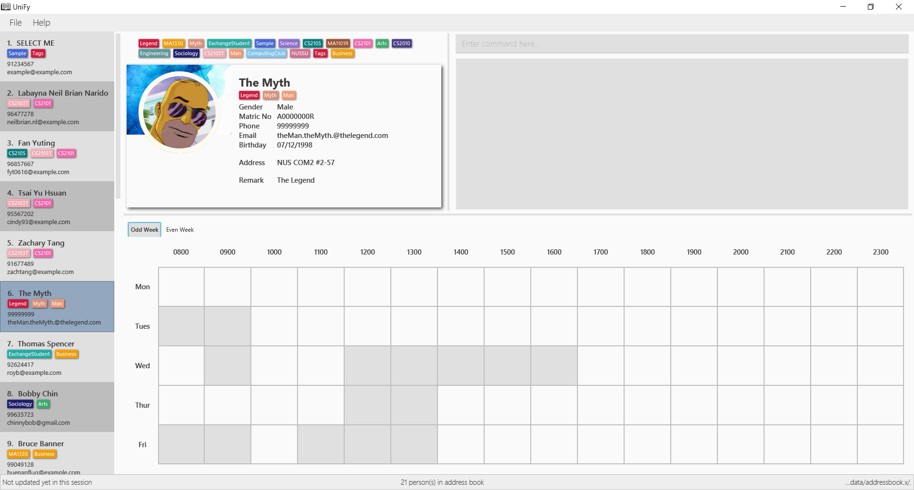
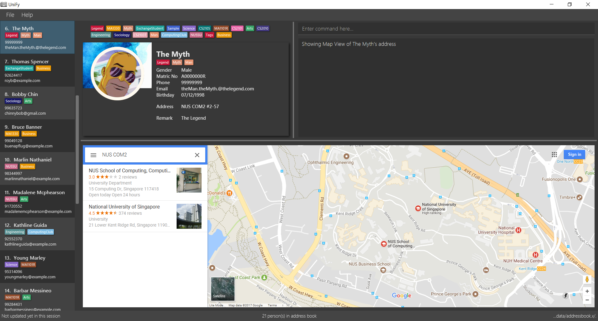

By: CS2103AUG2017-W09-B1 Since: AUG 2017 Licence: MIT
- 1. Introduction
- 2. Quick Start
- 3. Commands
- 3.1. Viewing help :
help - 3.2. Adding a person:
add - 3.3. Adding/Deleting a Photo for a person :
photo(For WINDOWS System Since v1.4) - 3.4. Giving remarks to a person :
remark(Since v1.1) - 3.5. Listing all people :
list - 3.6. Locating persons by filters :
find(Since v1.4) - 3.7. Editing a person or a tag:
edit - 3.8. Deleting multiple persons or tags:
delete - 3.9. Selecting a person :
select - 3.10. Viewing combined timetables :
whenfree(Since v1.5) - 3.11. Opening a Google Maps view of an address :
gmaps(Since v1.3) - 3.12. Changing the theme of UniFy :
theme - 3.13. Listing entered commands :
history - 3.14. Undoing previous command :
undo - 3.15. Redoing the previously undone command :
redo - 3.16. Clearing all entries :
clear - 3.17. Exiting the program :
exit - 3.18. Saving the data
- 3.1. Viewing help :
- 4. Upcoming Commands
- 4.1. Adding a person with temporary tags (Coming in v2.0)
- 4.2. Adding a person using the information on social media (Coming in v2.0)
- 4.3. Deleting old contacts (Coming in v2.0)
- 4.4. Listing persons who live nearby :
nearby(Coming in v2.0) - 4.5. Finding a central location among a group of persons :
central(Coming in v2.0) - 4.6. Sorting all persons :
sort(Coming in v2.0) - 4.7. Setting a password for your address book :
password(Coming in v2.0) - 4.8. Adding/Deleting a Photo for a person :
photo(For Linux and Mac System Coming in v2.0)
- 5. Other features
- 6. FAQ
- 7. Command Summary (v1.5)
- 8. Command Alternatives Reference Table
- 9. Version Notes
1. Introduction
Thank you for downloading UniFy! We’re glad that you’ve chosen us to help you manage your hectic university life.
UniFy is a personal assistant to your everyday life in NUS. It helps you maintain your numerous groups, tells you when your friends are free for lunch, and finds common time for project meetings. It even helps you find directions to wherever your friends might be!
We know that time is precious for university students, so we made UniFy as simple to use as possible. You only need commands to use UniFy, no more searching for hidden buttons or navigating unfamiliar pages!
Excited? Let’s get started!
2. Quick Start
-
Make sure you have Java version
1.8.0_60or later installed in your Computer.Having any Java version is not enough.
This app will not work with earlier versions of Java 8. -
Download the latest
UniFy.jarhere. -
Copy the file to the folder you want to use as the home folder for UniFy.
-
Double-click the file to start the app. The GUI should appear in a few seconds.
Figure 2.1 : UniFy’s Interface Light Theme
Figure 2.2 : UniFy’s Interface Dark Theme
-
Type the command in the command box and press Enter to execute it.
e.g. typinghelpand pressing Enter will open the help window. -
Some example commands you can try:
-
list: lists all contacts -
addn/John Doe g/Male p/98765432 e/johnd@example.com a/John street, block 123, #01-01 m/A0134232H tt/http://modsn.us/etYEX: adds a contact namedJohn Doeto the Address Book -
delete3: deletes the 3rd contact shown in the current list -
undo: undo the previous command -
exit: exits the app
-
-
Now you can explore the rest of UniFy! Refer to the Commands section below for details of each command.
3. Commands
Command Format
In this User Guide and in the message box in UniFy, you can see how to type a command by
referring to the Command Format provided for you.
Understanding the Command Format is easy! Let us explain:
-
Commands always start with a command word.
-
Example:
add,delete,clear,edit
-
-
INDEXrefers to the index number shown in the last generated listing of people.-
INDEXmust be a positive integer e.g.: 1, 2, 3, …
-
-
Words in
UPPER_CASEare parameters you have to give to the command. Each parameter is assigned and preceded by a prefix: a letter followed by a/-
Example:
add n/NAME
NAMEis a parameter you have to give to theaddcommand, assigned to then/prefix
If the parameter you want to provide is John Doe, the command will beadd n/John Doe.
-
-
Items in square brackets are optional
-
Example:
add n/NAME [t/TAG]
You can use theaddcommand asadd n/John Doe t/friendor asadd n/John Doe.
-
-
Items with
… after them can be used multiple times including zero times-
Example:
[t/TAG]…can be used ast/friend,t/friend t/familyetc.
-
-
Items can be in any order
-
If the Command Format specifies
n/NAME p/PHONE_NUMBER,p/PHONE_NUMBER n/NAMEis also acceptable.
-
-
Commands have alternative keywords than can be used in place of them.
-
Example: You can type
wipeorcinstead ofclearto execute the same command.
-
| You can view a summary of all commands here, and a table of all alternative keywords for commands here |
3.1. Viewing help : help
Unsure what to do inside UniFy? Call for help with this simple command.
To view the user guide, you can use this command at any time. The user guide will be opened in a new windo
Format: help
Alternatives: F1
3.2. Adding a person: add
First thing to do with UniFy is to start adding the various people you’ve met in University, as well as important people like your family.
3.2.1. Adding a person manually
Add contact information you want to remember! Your group mate’s timetable, your friend’s birthday. Tag your module mates with appropriate tags too!
Use this to add a person to UniFy
Format: add n/NAME [g/GENDER] [p/PHONE_NUMBER] [e/EMAIL] [a/ADDRESS] [m/MATRIC_NUMBER] [b/BIRTHDAY] [tt/TIMETABLE_URL] [t/TAG]…
Alternatives: a , insert
Figure 3.2.1 : A person with various contact information
You can view the contacts you have added in UniFy in the form of cards.
Examples:
-
add n/John Doe g/Male p/98765432 e/johnd@example.com a/John street, block 123, #01-01 m/A0134232H tt/http://modsn.us/etYEX -
add n/Betsy Crowe g/Female p/1234567 e/betsycrowe@example.com a/Newgate Prison t/friend t/criminal -
add n/Amy Tan g/F p/82974823 e/amy_tan@example.com a/PGP m/a0142323T -
add n/Betty g/F p/12345678 e/betty@example.com b/23051998 -
add n/Jasmine p/12345678
3.3. Adding/Deleting a Photo for a person : photo (For WINDOWS System Since v1.4)
When you study too much, sometimes, you forget how someone looks like.
You can add or remove a photo to an existing person in the address book.
Format:
(Add photo) photo INDEX ph/PHOTO PATH
(Delete photo) photo INDEX or photo INDEX ph/
Alternatives: ph
Figure 3.3 : Add your favourite photo of someone to their contact!
| Ensure that format of the path to the photo is correct and the photo exists in the specified place. |
Examples:
-
list
photo 1 ph/ C:\Users\User\Files\Amy_selfie.jpg
Add the picture 'Amy_selfie.jpg' in the specified location to the 1st person in the address book. -
list
photo 2
Removes the photo path from the 2nd person in the last shown list. -
find n/Betsy
ph 1
Removes the photo path from the 1st person in the results of thefindcommand.
3.4. Giving remarks to a person : remark (Since v1.1)
Sometimes you want to remind yourself how this person was like in a funny incident. Or you owe friends money for last night’s supper.
Tags are too short, and your remarks for a person are more descriptive and unique. UniFy lets you add a remark to a person you can always look back on.
You can add remarks to any person in UniFy, keeping any special information you might want to remember.
Format:
(Add remark) remark INDEX r/REMARK1 [r/REMARK2]…
(Delete remark): remark INDEX or remark INDEX r/
Examples:
-
list
remark 2 r/Likes to drink coffee.
Adds 'Likes to drink coffee' remark to the 2nd person in the address book. -
list
remark 2 r/Likes to drink coffee. r/CAP 5.0
Adds 'Likes to drink coffee' and 'CAP5.0' remarks to the 2nd person in the address book. -
find n/Betsy
remark 1 `command.
Removes the remark from the 1st person in the results of the `find -
find n/Betsy
remark 1 r/
Removes the remark from the 1st person in the results of thefindcommand.
3.5. Listing all people : list
Want to list all contacts for an overview?
Use this command to show a list of all persons stored.
Format: list
Alternatives: l , showall, viewall
3.6. Locating persons by filters : find (Since v1.4)
Display your contacts how you like it. All of them? Just your classmates for a particular module?
Want to know who’s birthday is in this month? Unify every common contact together and list them as one.
You can find people whose information contains all given keywords (inclusive) from each category.
Format: find [n/NAME] [p/PHONE] [e/EMAIL] [a/ADDRESS] [b/BIRTHDAY MONTH] [t/TAG]…
Alternatives: f , search
Examples:
-
find n/ian zach
Returns any person with name including 'ian' and 'zach' -
find n/Joe t/friends
Returns any person with name includingJoeand tagged byfriends -
find t/friends p/1234
Returns any person tagged byfriends, and having phone numbers containing1234 -
find t/jcfriends computing
Returns all persons in UniFy containing both 'JCfriends' and 'computing' -
find b/12
Returns all persons in UniFy having birthdays inDecember
3.7. Editing a person or a tag: edit
3.7.1. Editing a person
Made a mistake? Someone changed their contact details? Edit it.
You can edit the details of an existing person in your address book, specified by their index
Format: edit INDEX [n/NAME] [g/GENDER] [m/MATRIC_NO] [p/PHONE] [e/EMAIL] [a/ADDRESS] [b/BIRTHDAY] [tt/TIMETABLE_URL] [t/TAG]…
Alternatives: e , modify, change
Examples:
-
edit 1 p/91234567 g/Male e/johndoe@example.com
Edits the phone number, gender and email address of the 1st person to be91234567,Maleandjohndoe@example.comrespectively. -
edit 2 n/Betsy Crower m/A0162522j b/14081998 t/
Edits the name, matriculation number and birthday of the 2nd person to beBetsy Crower,A0162522j,14081998and clears all existing tags.
3.7.2. Editing a tag (Since v1.2)
When you need to edit module tags of classmates when advancing from a prerequisite module (e.g. CS1010 → CS1020), changing each of their tag to an updated one is too tedious! UniFy lets you simply edit a particular tag for all contacts in one command.
You can replace a tag to a new word for all people that have the specified tag
Format: edit old/OLDTAG new/NEWTAG
Alternatives: e , modify, change
Examples:
-
edit old/bestfriends new/enemies -
edit old/CS1010 new/CS1020
| Editing a person’s tag only edits the tag(s) for a single person. This command edits one tag name for all people. |
3.8. Deleting multiple persons or tags: delete
3.8.1. Deleting multiple persons (since v1.3)
Some people just have to go away in your life. Sometimes they leave you. Delete these people out of UniFy as well.
By specifying an index or multiple indexes, you can delete specified people in the most recent listing from the address book.
Format:
delete INDEX1, INDEX2, INDEX3…(separated by commas)
delete INDEX1 INDEX2 INDEX3… (separated by whitespaces)
Alternatives: d , remove
Examples:
-
list
delete 2
Deletes the 2nd person in the address book. -
list
delete 2, 3, 4
Deletes the 2nd, 3rd, 4th persons in the address book. -
find n/Betsy
delete 1 5
Deletes the 1st and 5th persons in the results of thefindcommand.
3.8.2. Deleting a Tag (or multiple Tags) (Since v1.1)
You have just finished a project in a module. Having the 'groupmate' tag to your project mates seems rude for you since the project is already over. Instead of going through each member one by one, delete that particular 'groupmate' tag in one go!
You specify a tag and it will be deleted from all people who originally had that tag
Format: delete t/TAG…
Alternatives: d , remove
Examples:
-
list
delete t/friends
Deletes the tag 'friends' from all people containing the tag 'friends' in the address book. -
find n/Betsy
delete t/module1 t/module2
Deletes the tags 'module1' and 'module2' from all people containing one of the tag, or both of the tags in the address book.
3.9. Selecting a person : select
You can select a person, identified by the number used in the last person listing.
Format: select INDEX
Alternatives: s, choose
Examples:
-
list
select 2
Selects the 2nd person in the address book. -
find n/Betsy
s 1
Selects the 1st person in the results of thefindcommand.
3.10. Viewing combined timetables : whenfree (Since v1.5)
"When are all of you free?" is an extremely common question in University. Let us solve that.
You can view the combined timetables of a group of people, selected by indexes.
Format: whenfree [INDEX]…
Figure 3.10 : View the combined timetables of your contacts easily
The cells that are filled with another colour are the times when somebody has a lesson
(Coming in v2.0): View who has lessons at each timeslot, and what lessons they have!
Examples:
-
whenfree 1 2
Displays a combined timetable for the 1st and 2nd person in the address book. -
whenfree
Displays a combined timetable for all listed users.
3.11. Opening a Google Maps view of an address : gmaps (Since v1.3)
You are meeting your group mate at his house. But where is his house on the map?
For a person specified by an index, opens a Google Maps view of the person’s address.
If you specify an address, gives the Google Maps directions from the given address to the person’s location.
Format: gmaps INDEX [a/ADDRESS]
Alternatives: g, map, maps
Examples:
-
list
gmaps 2
Opens the Google Maps view for the address of the 2nd person listed in the address book. -
find n/Betsy
gmaps 1
Opens the Google Maps view for the address of the 1st person in the results of thefindcommand. -
list
gmaps 2 a/Blk 632 Yishun St 61
Opens the Google Maps directions from Blk 632 Yishun St 61 to the address of the 2nd person listed in the address book.
3.12. Changing the theme of UniFy : theme
Don’t like how UniFy looks? Why not change it?
You can change the theme of UniFy to any theme that you have installed.
Format: theme THEME_NAME
Alternatives: th, changetheme
UniFy comes with two themes pre-installed, dark and light. More themes will be made available in the near future!
|
3.13. Listing entered commands : history
What have you been doing? Check the past.
Lists all the commands that you have entered in reverse chronological order.
Format: history
Alternatives: h , past
|
Pressing the ↑ and ↓ arrows will display the previous and next input respectively in the command box. |
3.14. Undoing previous command : undo
You made a mistake, deleted some one by accident. Do not fret. UniFy is forgiving, undo your mistakes.
Restores the address book to the state before the previous undoable command was executed.
Format: undo
Alternatives: u
Examples:
-
delete 1 2
list
undo(reverses thedelete 1 2command, but will not recover their contact photos) -
select 1
list
undo
Theundocommand fails as there are no undoable commands executed previously. -
delete 1
clear
undo(reverses theclearcommand)
undo(reverses thedelete 1command)
3.15. Redoing the previously undone command : redo
It is OK. You wanted to delete that person anyways.
Reverses the most recent undo command.
Format: redo
Alternatives: r
Examples:
-
delete 1, 2
undo(reverses thedelete 1, 2command)
redo(reapplies thedelete 1, 2command) -
delete 1
redo
Theredocommand fails as there are noundocommands executed previously. -
delete 1
clear
undo(reverses theclearcommand)
undo(reverses thedelete 1command)
redo(reapplies thedelete 1command)
redo(reapplies theclearcommand)
3.16. Clearing all entries : clear
Clears all entries from the address book.
Format: clear
Alternatives: c, wipe
3.17. Exiting the program : exit
You are done with what you need to do. Thank you for using UniFy.
Exits the program.
Format: exit
Alternatives: x , quit
3.18. Saving the data
Address book data are saved in the hard disk automatically after any command that changes the data.
There is no need to save manually.
4. Upcoming Commands
We have exciting new features in the works to be excited for!
4.1. Adding a person with temporary tags (Coming in v2.0)
Don’t want to keep a tag forever? Let’s set temporary tags!
Adds a person to the address book
Format: add n/NAME [g/GENDER p/PHONE_NUMBER] [e/EMAIL] [a/ADDRESS] [m/MATRIC_NUMBER] [b/BIRTHDAY] [tt/TIMETABLE_URL] [t/TAG]… [tmpt/NUM_OF_MONTHS/TEMPORARY TAG]…
Alternatives: a , insert
Here is the temporary tag information a person can have:
-
NUM_OF_MONTHSmust be a positive integer eg: 1, 2, 3, … -
NUM_OF_MONTHSspecifies the number of months the temporary tag will last, after which it will disappear.-
Example:
tmpt/6/ATAPcolleaguetags the person withATAPcolleague. After 6 months, the tag will disappear.
-
4.2. Adding a person using the information on social media (Coming in v2.0)
Add someone from a module via Facebook? Add him seamlessly into UniFy!
Adds a person to address book from the social media accounts
Format: add s/SOCIAL_MEDIA_TYPE SOCIAL_MEDIA_ID
Examples:
-
add s/facebook John Doe -
add s/Instagram John Doe
4.3. Deleting old contacts (Coming in v2.0)
Some people you do not talk for months. Maybe a group mate from a previous module you never see ever again. They drift away, and out of UniFy they go as well.
Deletes the contacts which you have not viewed/edited/listed for a certain number of months.
Format: delete old/NUM_OF_MONTH
Alternatives: d , remove
Examples:
-
delete old/2
Deletes all the contacts which you have not viewed/edited/listed for the past 2 months.
4.4. Listing persons who live nearby : nearby (Coming in v2.0)
It is Summer break. Who is there to call for late night supper near your home?
Shows a list of persons whose addresses are nearby a specified address within a specified radius.
Format: nearby a/ADDRESS d/DISTANCE
Alternatives: n, nearme, closeby, neighbours neighbors
Example:
-
nearby a/Blk 123 Kent Ridge Drive d/500
Shows a list of people with address 500m away from Blk 123 Kent Ridge Drive.
4.5. Finding a central location among a group of persons : central (Coming in v2.0)
"Where is a good place for us to meet?" UniFy everyone’s location to find a central one.
After listing persons, shows the central location among the persons most recently listed
Format: central [a/ADDRESS] [INDEX]…
Alternatives: ct, center, wheremeet
Example:
-
list
central
Shows the central location among the persons most recently listed. -
list
central a/Blk 123 Kent Ridge Drive
Shows the central location among the persons most recently listed and Blk 123 Kent Ridge Drive. -
list
central 1 5 6
Shows the central location among the persons most recently listed with Index 1, 5 and 6. -
list t/jcfriends
central
Shows the central locaton among the persons tagged as 'jcfriends'.
4.6. Sorting all persons : sort (Coming in v2.0)
Sometimes, you just meet too many people in University. Don’t worry, get all your contacts in order.
Shows the list of all persons in the current list in your address book by arranging their names in alphabetical order.
Format:
(Sort by name in ascending order) sort ASC
(Sort by name in descending order) sort DESC
Alternatives: s , sortall, arrange
4.7. Setting a password for your address book : password (Coming in v2.0)
Your privacy is important. Prevent others from viewing the contact details you possess.
Sets or changes the password that allows access to the address book
Format: password pw/PASSWORD
Alternatives: p , code
Example:
-
password 123456789
Adds 123456789 as a password. -
password
To clear the password set.
4.8. Adding/Deleting a Photo for a person : photo (For Linux and Mac System Coming in v2.0)
Allows the photoCommand to work under Linux and Mac Operating System.
5. Other features
Here are some features in UniFy that are not in the form of commands, but good to know to aid in your productivity.
5.1. Command Suggestion (Since v1.5)
Typing a misspelled word for a command will trigger the address book to suggest the correct phrasing for that command
Figure 5.1 : Typing the command delet will make UniFy reply `Do you mean delete?`
5.2. Tag Bar (Since v1.5)
You can easily view all existing tags as icons, displayed above the person card
Figure 5.2 : The tag bar is right above the information of the person displayed
| For tags that are not in use for any people, they will be in grey and after all the other tags |
(Coming in v2.0) You can click a tag and all people with that tag will be displayed!
5.3. Font Size (Coming in v2.0)
If you find the font too big or too small, the font size can be changed in Appearance → Themes
5.4. Footer Bar (Coming in v2.0)
Clicking on a tag will display the number of people associated with that tag.
By default, the footer bar shows the total number of people stored.
5.5. Google Maps Integration with Address (Coming in v2.0)
Clicking on the address in the address book will open a Google Map map view of the address location.
6. FAQ
Q: How do I transfer my data to another Computer?
A:
7. Command Summary (v1.5)
-
Add :
add n/NAME [g/GENDER] [p/PHONE_NUMBER] [e/EMAIL] [a/ADDRESS] [m/MATRIC_NUMBER] [b/BIRTHDAY] [tt/TIMETABLE_URL] [t/TAG]…
e.g.add n/John Doe g/Male p/98765432 e/johnd@example.com a/John street, block 123, #01-01 m/A0134232H tt/http://modsn.us/abCdE t/friend t/colleague -
Clear :
clear -
Delete
-
Delete (Person) :
delete INDEX1 INDEX2 INDEX3
e.g.delete 1 2 3 -
Delete (Tag) :
delete t/TAG…
e.g.delete t/modulemate t/colleague
-
-
Edit
-
Edit (Person) :
edit INDEX [n/NAME] [g/GENDER] [m/MATRIC_NO] [p/PHONE] [e/EMAIL] [a/ADDRESS] [b/BIRTHDAY] [tt/TIMETABLE_URL] [t/TAG]…
e.g.edit 2 n/James Lee e/jameslee@example.com b/19051994 -
Edit (Tag) :
edit old/TAG new/TAG
e.g.edit tag/friends tag/enemy
-
-
Photo :
photo INDEX ph/PHOTO_PATH
e.g.photo 1 ph/ C:/desktop/photo.jpg-
Delete Photo :
photo INDEX
e.g.photo 1
-
-
Remark :
remark INDEX r/REMARK1 [r/REMARK2]…
e.g.remark 2 r/Likes to drink coffee r/CAP 5.0-
Delete Remark :
remark INDEX
e.g.remark 2
-
-
Find :
find [n/NAME] [t/Tag] [p/PHONE] [e/EMAIL] [b/BIRTHDAY MONTH] [a/ADDRESS]…
e.g.find n/James Jake -
Google Maps
gmaps INDEX
e.g.gmaps 2-
Finding Directions
gmaps INDEX a/ADDRESS
e.g.gmaps 1 a/NUS
-
-
View Combined Timetables
whenfree INDEX [OTHER INDEXES]
e.g.whenfree 1 4 5 -
Change Theme
theme THEME NAME
e.g.theme light -
List :
list -
Help :
help -
Select :
select INDEX
e.g.select 2 -
History :
history -
Undo :
undo -
Redo :
redo
8. Command Alternatives Reference Table
In alphabetical order
| Command | Alternatives | - | - |
|---|---|---|---|
add |
a |
insert |
- |
clear |
c |
wipe |
- |
delete |
d |
remove |
- |
edit |
e |
modify |
change |
exit |
x |
quit |
- |
find |
f |
search |
- |
gmaps |
g |
map |
maps |
help |
F1 |
- |
- |
history |
h |
past |
- |
list |
l |
showall |
viewall |
photo |
ph |
- |
- |
redo |
r |
- |
- |
remark |
rm |
- |
- |
select |
s |
choose |
- |
theme |
th |
changetheme |
- |
whenfree |
wf |
timetable |
- |
undo |
u |
- |
- |
9. Version Notes
9.1. Version 1.1
-
remarkcommand -
deletesupport for tags
9.2. Version 1.2
-
Added new person contact information fields
-
Birthday
-
Timetable
-
Gender
-
Matriculation Number
-
-
editsupport for tags
9.3. Version 1.3
-
gmapscommand -
deletesupport for multiple persons -
Auto-correct command suggested
-
Display of person’s information on
select
9.4. Version 1.4
-
Display of all tags
-
Display of person’s timetable on
select -
Support for profile photo uploading
-
Support for
findusing more fields
9.5. Version 1.5
-
Viewing of combined timetables
-
Improve UI, add InfoPersonPanel
-
Make add command fields optional
-
Change the themes of the app